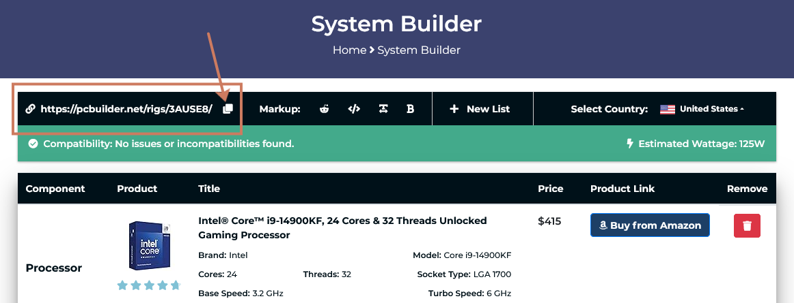
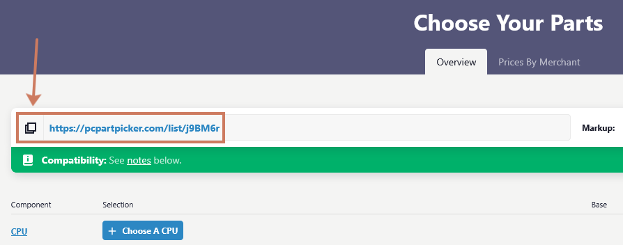

Jij bent een IT-consultant en moeten een setup samenstellen voor een klant
Niet iedereen heeft dezelfde noden als het gaat om een computer.
In deze opdracht krijg je een scenario waarin je een computer moet samenstellen op basis van de behoeften van een specifieke persoon.
Je krijgt een budget en moet onderzoeken welke onderdelen belangrijk zijn voor jouw scenario.
Daarna stel je een PC samen en motiveer je jouw keuzes.
Scenario’s
- Leerling uit het eerste middelbaar
- Student in het hoger onderwijs/universiteit
- Pas afgestudeerde werkzoekende
- Zelfstandige IT’er
- Kleine zelfstandige (bv. elektricien, garagist, fotograaf, videoeditor, architect, …)
- Grafisch ontwerper
- Hardcore gamer/streamer
Verslag
Je mag de opdracht uitwerken op één van de volgende manieren:
- Geschreven document
Maak een duidelijke structuur met titels, tabellen, een inhoudstafel, … - Presentatie
Zorg voor een duidelijk en grafisch interessante presentatie.
Monderlinge Toelichting
Voor deze opdracht is het belangrijk dat je niet enkel een correcte pc-samenstelling maakt, maar ook aantoont dat je begrijpt waarom je deze keuzes maakt.
Daarom zal je jouw voorstel mondeling toelichten alsof je in gesprek bent met de klant. Je legt in je eigen woorden uit welke onderdelen je gekozen hebt, hoe ze aansluiten bij de noden van de klant en waarom ze binnen het budget passen.
Je moet ook kunnen antwoorden op bijkomende vragen over je keuzes en eventueel alternatieven bespreken.
Opdracht 1: Noden
Noden
- Waarvoor zal de PC het meest gebruikt worden.
- Naar welke onderdelen vertaalt zich dat, welke 2 onderdelen zijn dus het belangrijkste.
- Welke 2 onderdelen zijn minder belangrijk.
- Zijn er extra onderdelen, poorten of externe hardware die nuttig kunnen zijn?
Besturingssysteem
- Welk besturingssysteem leent zich het beste bij dit scenario, en waarom?
- Waarom lenen de andere besturingssystemen zich minder bij dit scenario.
Voeding
Zoek op en noteer in je document:
- Wat gebeurt er bij te zwakke voeding?
- Wat is overkill?
Puntenverdeling
| Puntenverdeling: Hardware Shopping 1 Noden | |
|---|---|
| Analyse van de noden | 4 |
| Besturingssysteem | 2 |
| Voeding | 2 |
| Totaal | 8 |
Opdracht 2: Koop de onderdelen
Stel voor beide budgetten een volledige PC samen en motiveer je keuzes.
- Laag budget: max €1000
- Hoog budget: max €2500
Voorzie alle onderdelen die een werkende PC nodig heeft:
Vergelijk kort de goedkopere en duurdere configuratie:
- Wat zijn de belangrijkste verschillen?
- Welke compromissen moest je maken binnen het lage budget?
- Welke 2 dingen zou je niet kunnen doen met jouw goedkope setup?
- Wat krijg je extra bij het hogere budget?
PC build tools
Via deze webtools kan je zelf een PC samenstellen:
Belangrijk
Pas de landsinstellingen aan zodat je onderdelen te zien krijgt beschikbaar je jouw regio en aan de correcte prijzen.
Beide tools bieden de mogelijkheid om je setup te bewaren via een URL. Zet de URL van je config mee in je verslag.


Puntenverdeling
| Puntenverdeling: Hardware Shopping 2 Aankoop | |
|---|---|
| Setup: laag budget | 2 |
| Setup: hoog budget | 2 |
| Vergelijking | 2 |
| Totaal | 6 |
Opdracht 3: Besparing & Backups
Besparing
De klant zegt last-minute: “Je moet €200 besparen”.
- Wat schrap je, bij beide builds?
Backupstrategie
Stel je voor dat er iets misgaat met de laptop van je klant, bijvoorbeeld:
- de laptop crasht
- de laptop wordt gestolen
- de laptop wordt getroffen door ransomware
Jij moet een betrouwbare backupstrategie uitwerken zodat de klant zo weinig mogelijk data verliest en snel weer kan werken.
1. Wat is de 3-2-1 regel?
- Leg in je eigen woorden uit wat de 3-2-1 backupregel is
- Is deze regel nodig voor jouw klant? Waarom wel of niet?
2. Jouw gekozen backupstrategie
- Beschrijf welke aanpak jij kiest (cloud backup, externe harde schijf, combinatie, …)?
- Leg uit waarom jouw keuze goed past bij deze klant
3. Hardware en/of abonnementen
- Welke tools ga je gebruiken (externe harde schijf, NAS, cloudopslag, …)?
- Welke abonnementen?
- Bereken ook:
- De jaarlijkse kostprijs
- Toon duidelijk hoe je aan dit bedrag komt
4. Wat, waar en hoe vaak back-uppen?
- Wat wordt geback-upt (documenten, foto’s, volledige systeem, …)?
- Waar wordt welke data opgeslagen?
- Hoe vaak gebeurt de backup?
5. Automatisatie vs. gebruiker
- Hoe zorg je ervoor dat alles zo automatisch mogelijk verloopt?
- Wat moet de klant zelf nog doen (schijf aansluiten, wachtwoorden onthouden, …)?
Doel: zo weinig mogelijk kans op menselijke fouten
6. Herstellen na een probleem
- Hoe zet je alles terug na een crash of aanval (bestanden herstellen, eventueel volledige laptop opnieuw installeren, …)
Puntenverdeling
| Puntenverdeling: Hardware Shopping 3 Besparing Backups | |
|---|---|
| Besparing | 2 |
| Backupstrategie | 6 |
| Totaal | 8 |
Created: 27/03/2025